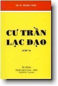

BuddhaSasana
Home Page
This document is written in Vietnamese, with Unicode
-Times font
|  |
Cư Trần Lạc ÐạoTập 2 Cư sĩ Chính TrựcToronto, Canada |
|
Kính dâng Thập Phương
Thường Trụ Tam Bảo. Ngưỡng mong chư Tôn Ðức, chư Thiện Hữu Tri Thức từ bi chỉ dạy. Hoan hỷ cúng dường
chư Phật Tử khắp nơi .
Ðược chỗ không. Không chỗ được. Như hà thị đạo? Như hà thị Phật? No gains without pains. Người không sương gió, khó thành công. -oOo- Lời TựaTập sách này gồm có những bài viết đơn giản về Phật Pháp Tại Thế Gian, Cốt Tủy Của Ðạo Phật, Vô Thượng Thậm Thâm Vi Diệu Pháp, những điều cụ thể, thiết thực, có thể thực sự áp dụng để tu tâm dưỡng tánh trong mọi hoàn cảnh của đời sống hằng ngày của người Phật Tử, với niềm hy vọng đem lại An Lạc Hạnh Phúc và Giác Ngộ Giải Thoát.
Nhằm mục đích hoằng dương Chánh Pháp, các bài viết trong tập sách này được thành tâm dâng tặng các tổ chức, các tập san, các tạp chí, các hoạt động hoằng hóa lợi sanh, hoan hỷ cúng dường chư Phật Tử mười phương tùy nghi xử dụng, được phép in lại, đăng báo, thu băng, phát thanh, từng bài hoặc toàn tập, để phổ biến dưới mọi hình thức, một cách bất vụ lợi, không được bán dưới bất cứ hình thức nào. Kính chúc quí độc giả cư trần lạc đạo. Toronto, những ngày vào
Thu năm 2000 Lời Giới Thiệu (bìa sau) Sống
đời vui đạo Thương ghét, phải quấy, đẹp xấu, đúng sai, hơn thua, chính là vọng tâm, vọng tưởng, vọng thức, vọng niệm. Ðó chính thực là con trâu, mà người tu theo Phật phải chăn phải dắt, phải kềm phải chế, phải điều phải khiển, phải thuần phải phục, thúc liễm luôn luôn. Chăn trâu thành công thì Tánh Giác hiển lộ. Ðiều quan trọng là: "Con người hãy chăn dắt con trâu, chớ để con trâu dẫn dắt con người! Nếu để con trâu dẫn dắt, không biết con người sẽ đi về đâu?". Cho nên mới có pháp tu gọi là "Pháp Môn Chăn Trâu", chính là nghĩa đó vậy. Chăn trâu nghĩa là: áp dụng Chánh Pháp, vào trong cuộc sống, của mình hằng ngày, dẹp trừ vọng tâm, vọng tưởng vọng thức, vọng niệm liên miên, chuyển hóa ba nghiệp, thân khẩu ý mình, bất lương bất thiện, thành ra ba nghiệp, hoàn toàn thanh tịnh. Chăn trâu nghĩa là: không theo sức mạnh, sức kéo sức lôi, của tâm tham lam, sân hận si mê. Ðây mới chính là ý nghĩa thiết yếu của việc tu tâm dưỡng tánh theo đạo Phật: Trong tâm khởi niệm, nếu giác kịp thời, liền biết không theo, đó là Chơn Tâm. Trong tâm khởi niệm, nếu còn mê muội, không giác kịp thời, liền theo niệm đó, trở thành vọng tâm. Cũng ví như là: Khi có gió thổi, mặt biển nổi sóng, gọi là biển động. Mặc dù có gió thổi, mặt biển vẫn bình yên, đó là biển thái bình, ví như bản tâm thanh tịnh. Tu theo đạo Phật, không phải chỉ có: cúng kiến lễ lạy, van xin cầu nguyện, không còn gì khác! Nếu con người biết sẵn sàng tha thứ cho người khác, cũng như đã từng nhiều lần trong đời, tha thứ cho chính bản thân mình, thì cảnh giới thiên đàng niết bàn cực lạc chính là đây, ngay trên thế gian này! Sinh sự thì sự sinh. Nhân nào thì quả nấy. Gieo gió thì gặt bão. Có lửa thì có khói. Cầu nguyện khấn vái chỉ đem lại sự bình an tâm hồn tạm thời mà thôi. Bình an thực sự chỉ có cho người thiện tâm. Thiên đàng hay địa ngục, tuy là hai tâm trạng khác nhau, nhưng tất cả thực sự chỉ là các trạng thái ở trong thâm tâm của tất cả chúng ta. Cũng ví như biển động hay biển lặng, tuy khác nhau, nhưng đều là hai trạng thái của biển mà thôi vậy. Cảnh giới tịch diệt an lạc đó không dành riêng cho bất cứ ai, không thuộc bất cứ tôn giáo nào, không thuộc bất cứ sắc dân nào, không thuộc bất cứ thời đại nào. Bất cứ ai dẹp được một phần các tâm niệm sanh diệt, thì người đó sống được một phần trong cảnh giới an lạc tịch diệt. Cư-sĩ Chính-Trực -oOo- 01 | 02 | 03 | 04 | 05 | 06 | 07 | 08 | 09 | 10 | 11 | Mục lục |
Chân thành cám ơn Cư sĩ Chính Trực đã gửi tặng phiên bản điện tử
(Bình Anson, 11-2000)
[Trở về trang Thư Mục][Cư Trần Lạc Ðạo, Tập 1]
update: 12-11-2000